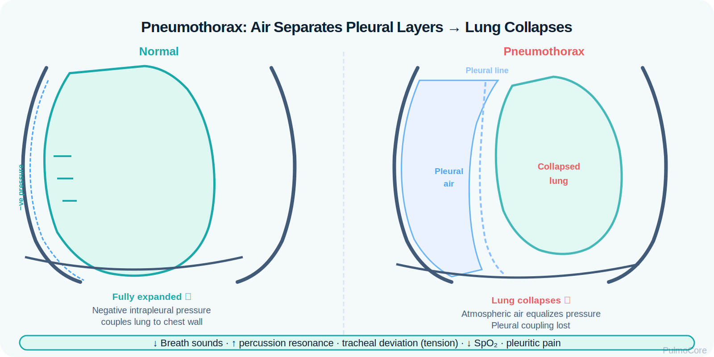
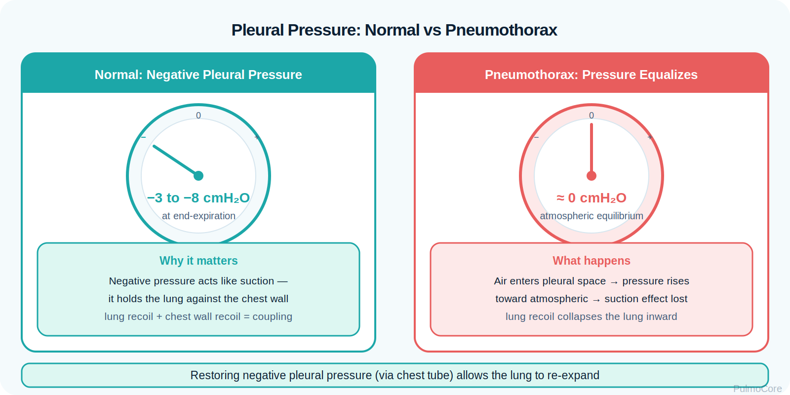
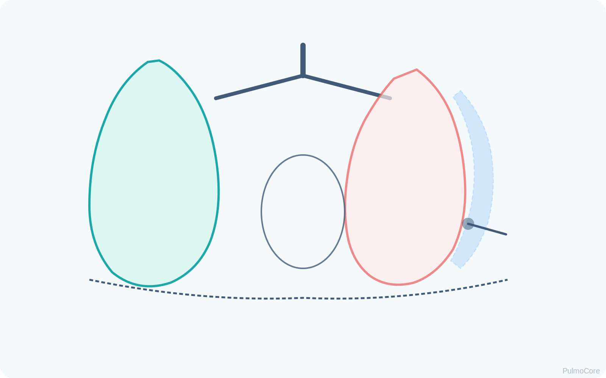
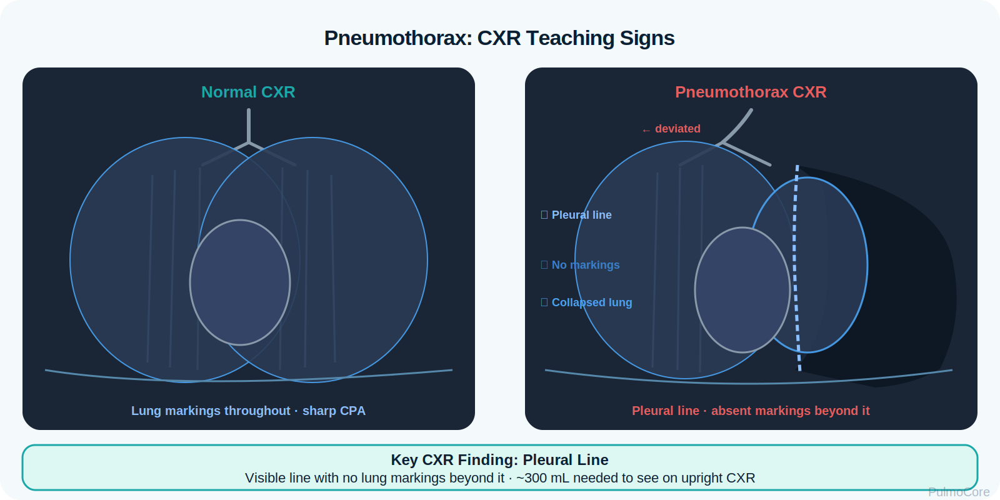

Pneumothorax occurs when air enters the pleural space, separating the visceral and parietal pleura and causing partial or complete lung collapse. This module focuses on RT-level recognition, diagnostic interpretation, oxygenation/ventilation impact, chest tube concepts, tension pneumothorax red flags, and escalation priorities.
Category Pleural Space Disorder
Estimated Time 30–40 minutes
Level Core RT Knowledge
Learning Objectives
By the end of this pneumothorax module, learners should be able to connect pleural air accumulation, lung collapse, clinical findings, imaging clues, treatment decisions, and escalation priorities.
1. Explain pathophysiology Describe how air in the pleural space disrupts negative pressure and causes lung collapse.
Watch this quick overview before moving into the disease snapshot.
Disease Snapshot
Pneumothorax is a pleural space problem, not a primary airway disease. Air collects between the lung and chest wall, eliminating the normal negative pleural pressure that keeps the lung expanded. The affected lung partially or completely collapses, creating ventilation impairment and possible hypoxemia.
What it is: Air in the pleural space causing partial or complete lung collapse.
Primary problem: Loss of negative intrapleural pressure.
For RTs, pneumothorax is a “space and pressure” emergency. The RT must identify when unilateral decreased breath sounds and worsening oxygenation suggest pleural air, and when positive-pressure ventilation may rapidly worsen tension physiology.
Board Prep Frame
Immediately connect pneumothorax with sudden dyspnea/chest pain, decreased or absent unilateral breath sounds, hyperresonance, CXR pleural line, high-pressure alarm during ventilation, and emergency decompression if tension signs are present.
Quick Pre-Check
Start with the core pneumothorax pattern
Which statement best describes the core mechanical problem in pneumothorax?
Anatomy & Pathophysiology
Normally, negative intrapleural pressure keeps the visceral pleura attached to the parietal pleura so the lung stays expanded. When air enters the pleural space, that pressure relationship is lost and the lung recoils inward.

Air leak or chest wall opening → air enters pleural space → negative pressure is lost → lung recoils/collapses → ventilation decreases on affected side → hypoxemia and increased work of breathing → tension risk if pressure continues to rise.
What Changes During Pneumothorax
Change
What Happens
Why It Matters
Pleural air
Air separates visceral and parietal pleura.
Loss of surface contact prevents full lung expansion.
Loss of negative pressure
The lung recoils inward.
Creates partial or complete collapse.
Reduced ventilation
Affected alveoli receive less fresh gas.
Can cause hypoxemia and V/Q mismatch.
Pressure buildup
Air enters but cannot escape in tension pneumothorax.
Can compress mediastinal structures and reduce venous return.
Positive-pressure ventilation
May force more air into the pleural space if an air leak exists.
Can worsen pneumothorax or tension physiology.
Visual Learning: Pleural Pressure Problem

Danger Sign
If pneumothorax progresses to tension pneumothorax, pressure can shift the mediastinum, reduce venous return to the heart, and cause obstructive shock. Do not wait for imaging when classic tension signs are present.
Click the Pneumothorax Hotspots
Click each hotspot to reveal how that structure contributes to pneumothorax.

Start here: Click all four hotspots to complete this activity.
0 / 4 hotspots reviewed
Types, Etiology & Risk Factors
Pneumothorax can occur spontaneously, after trauma, after procedures, or during positive-pressure ventilation. Classification helps the RT anticipate severity and escalation needs.
Type
Common Cause
RT Concern
Primary spontaneous
Rupture of small subpleural bleb without known lung disease.
Sudden pleuritic pain and dyspnea in otherwise healthy patient.
Secondary spontaneous
Underlying lung disease such as COPD, cystic fibrosis, infection, or interstitial disease.
Less reserve; smaller pneumothorax may cause major distress.
Traumatic
Blunt or penetrating chest injury.
Assess for open chest wound, rib fractures, hemothorax, and tension signs.
Iatrogenic
Central line placement, thoracentesis, biopsy, mechanical ventilation barotrauma.
Monitor after procedures and during high-pressure ventilation.
Tension
One-way valve effect traps air under pressure.
Emergency: decompression before imaging if unstable.
Sort the Pneumothorax Findings
Choose the best category for each item, then check your answers.
Central venous catheter insertion
Absent breath sounds on one side
Blunt chest trauma
Hypotension with tracheal deviation
Pleural line with absent peripheral lung markings
Complete the sorting activity to continue.
Clinical Manifestations
Presentation ranges from mild dyspnea to cardiovascular collapse. RT assessment should focus on unilateral breath sounds, chest symmetry, work of breathing, oxygenation, hemodynamics, and recent trauma/procedure/ventilator history.
A mechanically ventilated patient with sudden desaturation, increased peak pressures, hypotension, and unilateral absent breath sounds should trigger concern for tension pneumothorax.
Diagnostics & Assessment
Diagnostic data confirms pleural air, estimates size, monitors progression, and checks response after chest tube placement. In unstable tension pneumothorax, clinical signs drive immediate action.
Chest Imaging

Test
Pneumothorax Pattern
Chest x-ray
Visible pleural line with no lung markings beyond it; deep sulcus sign may appear on supine film.
Chest CT
Most sensitive imaging, but not first priority in unstable emergency.
Bedside ultrasound
Absent lung sliding, barcode/stratosphere sign, possible lung point.
ABG
May show hypoxemia; severe cases may show ventilatory failure if fatigue or shock develops.
Pulse oximetry
Tracks oxygenation trend but does not determine pneumothorax size.
RT Interpretation
Imaging confirms the diagnosis, but RT bedside findings often create the first concern: unilateral decreased breath sounds, sudden dyspnea, chest pain, worsening oxygenation, and high-pressure alarms during positive-pressure ventilation.
Severity Classification & Imaging Clues
Severity depends on size, symptoms, oxygenation, hemodynamics, underlying lung reserve, and whether air is under pressure. A small stable primary spontaneous pneumothorax may be observed, but an unstable tension pneumothorax is an emergency.
Small/stable Mild symptoms, stable vitals, no tension signs; may be observed per provider plan.
Symptomatic/large Dyspnea, hypoxemia, larger collapse, or underlying lung disease; may need aspiration or chest tube.
Tension/unstable Severe distress, hypotension, JVD, tracheal shift, shock; immediate decompression.
Imaging Clue Activity
A chest x-ray shows a sharp pleural line on the right with no lung markings beyond that line. Which interpretation is most appropriate?
Severity & Red Flags
The key question is not simply “Is there air in the pleural space?” The key question is whether the patient is stable or developing tension physiology.
Red Flag
Why It Matters
Hypotension with respiratory distress
May indicate obstructive shock from tension pneumothorax.
Tracheal deviation away from affected side
Late sign of mediastinal shift; do not wait for this to appear.
JVD with absent unilateral breath sounds
Suggests impaired venous return from intrathoracic pressure.
Sudden high-pressure ventilator alarm
Can occur when pleural air rapidly accumulates during PPV.
Rapidly worsening SpO₂ and severe dyspnea
Indicates worsening ventilation/oxygenation and need to escalate.
Open chest wound with bubbling/sucking sound
Open pneumothorax risk requiring immediate occlusive dressing strategy.
Management & Treatment
Management depends on stability, size, cause, and whether tension physiology exists. Oxygen supports hypoxemia and may help pleural air reabsorption in selected stable cases, while chest tubes remove pleural air and allow re-expansion when needed.
General Treatment Concepts
Situation
Typical Management Concept
RT Role
Small stable pneumothorax
Observation, oxygen if ordered/needed, repeat imaging.
Monitor SpO₂, WOB, breath sounds, and symptom changes.
Large or symptomatic pneumothorax
Needle aspiration or chest tube depending on provider plan.
Assist with oxygen, setup, monitoring, post-procedure assessment.
Open pneumothorax
Occlusive dressing and definitive chest tube management.
Recognize wound, support ventilation/oxygenation, monitor for tension.
Tension pneumothorax
Immediate needle decompression followed by chest tube.
Call/escalate rapidly; prepare equipment; reassess after decompression.
Ventilated patient
Reduce risk of further air leak when possible; manage pressures under provider orders.
Watch high pressures, desaturation, and chest tube air leak patterns.
Acute Pneumothorax Escalation Sequence
Select the steps in the best general order for a patient with suspected unstable tension pneumothorax.
Recognize unilateral breath sounds plus instability
Apply oxygen and call for immediate help
Prepare for emergency needle decompression
Reassess breath sounds, SpO₂, BP, and WOB
Prepare definitive chest tube management
Monitor for recurrence, air leak, and re-expansion
Complete the sequence activity to continue.
Tension Pneumothorax & Ventilator Considerations
Tension pneumothorax occurs when air enters the pleural space and cannot escape. Pressure rises, the affected lung collapses further, the mediastinum shifts, and venous return drops.
Emergency goal: Release trapped pleural pressure before cardiovascular collapse worsens.
Ventilator concept: Sudden high pressures and desaturation after PPV can signal pneumothorax/tension.
Board Pearl
For suspected tension pneumothorax with instability, the next step is emergency decompression, not waiting for a chest x-ray. Definitive management usually requires chest tube placement after decompression.
Respiratory Therapist Role
The RT is central to early recognition, oxygenation support, ventilator troubleshooting, chest tube monitoring, and reassessment after intervention.
RT Task
What to Assess or Do
Why It Matters
Assess breath sounds
Compare right vs left air movement.
Unilateral decrease is a high-yield clue.
Assess oxygenation
SpO₂, PaO₂, cyanosis, oxygen device need.
Tracks severity and response.
Watch hemodynamics
BP, HR, JVD, shock signs.
Detects tension physiology.
Troubleshoot ventilator changes
High peak pressure, sudden desaturation, low exhaled volume.
May indicate pneumothorax or air leak.
Monitor chest tube system
Air leak chamber, tidaling, suction/water seal setup per order.
Supports lung re-expansion and detects ongoing leak.
Guided Unfolding Case Study
The Sudden Desaturation
This guided case reveals one clinical stage at a time. Learners make an RT decision, receive feedback, and then continue to the next stage.
Stage 1: Initial Presentation
A 24-year-old tall, thin patient arrives with sudden sharp right-sided chest pain and shortness of breath after coughing.
RR 28/min
SpO₂ 91% on room air
Breath Sounds Decreased on right
Decision Question: What should the RT suspect first?
Stage 2: Imaging
Chest x-ray shows a right pleural line with absent lung markings beyond the line. The patient remains stable but symptomatic.
Decision Question: What does this imaging support?
Stage 3: Deterioration
Before chest tube placement, the patient becomes more distressed. SpO₂ falls, BP drops to 82/48, neck veins are distended, and breath sounds are absent on the right.
Decision Question: What is the priority interpretation?
Stage 4: After Decompression
The provider performs emergency decompression and prepares for chest tube placement. SpO₂ and BP begin improving.
Decision Question: What should the RT reassess next?
Case Wrap-Up
RT Takeaway: Pneumothorax is a pleural pressure problem. Sudden unilateral breath sound change plus dyspnea should move pneumothorax high on the differential.
If the patient worsens: hypotension, JVD, severe distress, absent unilateral breath sounds, and tracheal deviation suggest tension physiology and require immediate escalation.
Knowledge Check
Board-Style Practice
Answer each question to complete this activity. Answer choices shuffle each time the lesson opens.
Question 1
A patient has sudden pleuritic chest pain, dyspnea, and absent breath sounds on the left. Which diagnosis should be strongly suspected?
Question 2
Which finding is most concerning for tension pneumothorax?
Question 3
Which chest x-ray pattern supports pneumothorax?
Question 4
A ventilated patient suddenly desaturates with high-pressure alarms and absent breath sounds on the right. What should the RT prioritize?
0 / 4 questions answered
FAQ
Common Pneumothorax Questions
What is the simplest way to understand pneumothorax?
Pneumothorax is air in the pleural space. That air breaks the pressure relationship that keeps the lung expanded, so the lung collapses inward.
How is pneumothorax different from atelectasis?
Pneumothorax is pleural air causing lung collapse from outside the lung. Atelectasis is alveolar collapse from problems such as obstruction, compression, or poor expansion.
Why is positive-pressure ventilation a concern?
Positive pressure can force additional air through an air leak into the pleural space, potentially enlarging the pneumothorax or causing tension physiology.
Does every pneumothorax need a chest tube?
No. Small stable pneumothoraces may be observed depending on provider plan and patient factors. Large, symptomatic, traumatic, secondary, or tension cases often require more aggressive intervention.
What makes tension pneumothorax life-threatening?
Pressure builds in the chest, compresses the lung and mediastinum, reduces venous return, and can cause obstructive shock.
What should the RT monitor after chest tube placement?
Monitor oxygenation, breath sounds, work of breathing, chest expansion, air leak chamber, tidaling, suction/water seal setup per order, and signs of recurrence.
Should imaging delay emergency decompression?
No. If the patient is unstable with classic tension pneumothorax signs, emergency decompression should not wait for x-ray confirmation.
Summary & Clinical Pearls
Pneumothorax is air in the pleural space that disrupts negative pressure and causes lung collapse. Severity ranges from small and stable to tension pneumothorax with obstructive shock. RTs must recognize unilateral breath sound changes, sudden dyspnea, imaging clues, ventilator pressure changes, and emergency red flags.
Must know: Pneumothorax is a pleural pressure problem, not primarily an airway inflammation problem.